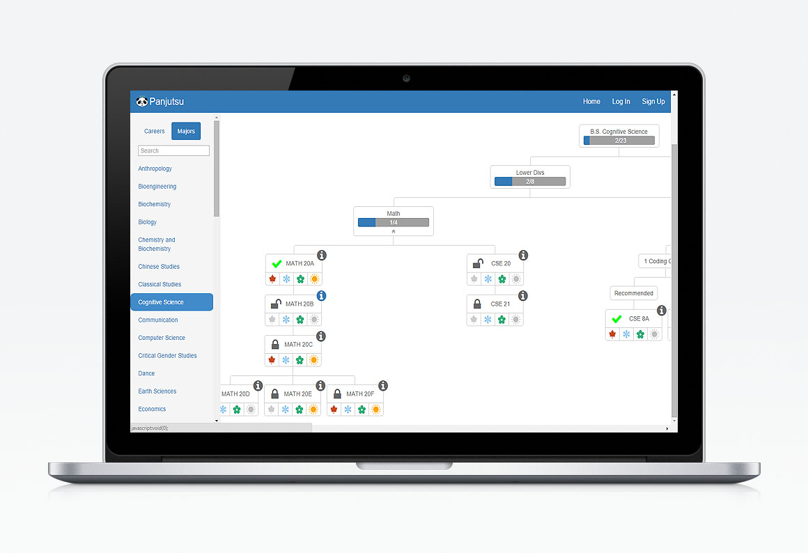

Panjutsu is a simple tool that helps UC San Diego students explore majors and career paths available to them. I worked with a team of 4 other UX designers and developers from ideation, sketching, storyboarding, prototyping to development as part of an information architecture and user experience course at UC San Diego. The main highlight of the tool was an intuitive and fun to use flowchart that showed the class path for a specific major. I designed and created the icons that shows which quarter a certain class is available. I also helped the team with scraping the information shown on the site as well as making improvements with the code. The whole process for creating this tool was recorded by my fellow teammember Amon which you can view
here. Our app was voted the most helpful product from a class of about 40 students.